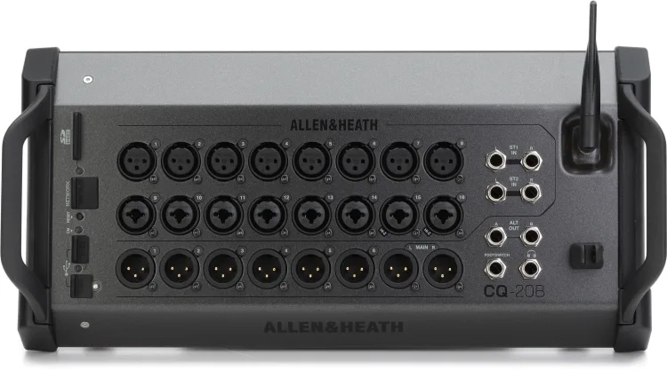

Allen & Heath CQ-20B Review: The Virtual Soundcheck Feature That Changed My Workflow

My favorite feature on the Allen & Heath CQ-20B is being able to play a previous gig through the system while I walk around the room.
That might sound like an unusual place to start a mixer review. But when you’re both the performer and the person responsible for sound, hearing your own mix from the audience’s position is a pretty big deal.
The CQ lets me multitrack record a performance to an SD card, then use that recording at the next gig to work on the mix before we start playing.
That ability has become my favorite reason to bring it.
Why I Bought the CQ-20B
Before the CQ, I used the built-in mixer on my Electro-Voice EVOLVE 50M. It got the job done.
I didn’t buy a separate mixer because the EVOLVE suddenly stopped meeting my needs as a performer. I needed a larger mixer for the venue where I run sound. The CQ-20B filled that role and gave me more options for my own performances.
That distinction matters. It’s easy to talk yourself into buying equipment because you might need its capabilities someday. In this case, I had an actual job for it.
What I didn’t anticipate was how much I would appreciate the recording and playback workflow.
The Problem With Mixing Yourself
When you’re performing, your listening position is largely decided for you.
You’re at the microphone, behind the keyboard, or holding the guitar. You can hear what’s happening where you’re standing, but that doesn’t tell you everything about what the audience hears.
You can step out front while someone else plays. That helps. But hearing the complete act—including your own part—while you make adjustments is a different opportunity.
For a two-person act like A Change of Plans, neither of us is a dedicated sound engineer standing in the audience throughout the show. We’re performing.
That’s where having a recording of the actual act becomes useful.
Record One Gig. Sound-Check the Next.
One of the CQ-20B’s most useful capabilities is multitrack recording directly to an SD card. That’s the method I use.
Instead of recording only the finished stereo mix, I can capture the individual channels from a performance. At the next gig, I can play those tracks back through the mixer and work on the mix. I don’t need a laptop or separate recording software for this workflow.
With the recording playing through the PA, I can grab my iPad, walk around the room, and listen.
Are the vocals clear? Is an instrument taking up too much space? Are the effects helping, or making the words harder to understand? Does the balance still work farther from the speakers?
I can make adjustments while the performance continues playing. I don’t have to stop singing to listen, then return to the microphone and try to remember exactly what bothered me.
It’s commonly called a virtual soundcheck. The name sounds technical. The benefit is practical: I get to hear our act from somewhere other than our performance position.
Why Multitrack Matters
Playing a finished stereo recording through your PA can help you hear how the system behaves in a room. Separate tracks let you go further.
If a vocal needs attention, you can work on that channel. You can adjust the balance between instruments, change EQ, and hear how different effects settings sit within the performance. You’re working with the individual parts of your own act.
There is one technical distinction worth making: playback adjustments don’t replace setting the live microphone and instrument preamp gains. On the CQ, digital playback sources use trim, while live inputs have their own preamp gain settings. Those live levels still need checking when you return to the microphones and instruments.
The recording gives me a useful head start. It doesn’t eliminate the live soundcheck.
The Room Still Gets a Vote
A recording from the last gig doesn’t make the next room behave like the last room.
Speaker placement changes. The space changes. An empty room won’t behave exactly like a room full of people. Open microphones and stage monitors still need attention when everything is live.
I think of virtual soundcheck as a chance to make better decisions before the performance begins. It gives me time to listen to the mix as a whole, make adjustments, and establish a starting point. Then I can check the live setup and keep listening as the evening develops.
The value is being able to do more of that work while I’m free to move around.
The Tradeoff: You Need Access to the Controls
There’s another side to this setup, and I’ve experienced it firsthand.
At one gig, I couldn’t get my iPad to connect to the CQ-20B. Something about the building’s environment appeared to be interfering with the wireless connection, although I never confirmed the exact cause.
Fortunately, I had a backup mixer with me. I switched mixers and was able to continue with the gig.
But that experience highlighted something important about the CQ-20B: without conventional onboard channel controls or a touchscreen, losing access to the control app can become a serious problem.
The CQ-20B supports Ethernet connectivity, so wireless isn’t the only control option. But a fallback needs to be configured and understood before something goes wrong.
I still love the flexibility of controlling the mix from anywhere in the room. I just wouldn’t want that flexibility to be my only plan.
Field Note
When evaluating equipment, think about the task it will improve at an actual gig—and what your fallback will be if it doesn’t cooperate.
I bought the CQ because I needed a larger mixer for venue sound. The feature I appreciate most is how it lets me use a previous performance to prepare for the next one.
Let’s Be Frank
The EVOLVE 50M’s built-in mixer got the job done. Moving to the CQ wasn’t a requirement for playing a small acoustic gig.
But being able to record our act to an SD card, play it back through the system, and walk the room while making adjustments has earned its place in my workflow.
The connection issue deserves consideration, too. A mixer needs accessible controls when you’re responsible for a live show. I was glad I had a backup that night.
For me, the CQ’s standout feature is the opportunity to spend part of soundcheck listening from the audience’s side of the speakers. That’s a useful perspective when you normally spend the entire evening on the other side.
More from my setup
Read my EVOLVE 50M review, browse the gear I use, or see the official CQ-20B product page.
Have a question about my setup? Get in touch.